Первая модель: список тегов
- создавать теги в корне «Теги», задавать тип значения и единицы измерения;
- привязывать тег к хранилищу и понимать, как на это влияет настройка Конфигуратора;
- находить привязки тегов в хранилище и переходить по ним к тегам;
- записывать значение в тег и читать его обратно, понимая метки времени и параметры
formatиactual.
К концу урока в модели есть три параметра насосной станции. В тег «Давление» записаны два значения, и вы умеете прочитать их по-разному.
Самая простая модель — линейный список тегов, без объектов и иерархии. Для этого в дереве есть корень «Теги». Такой модели хватает, когда параметров немного и группировать их не нужно: несколько датчиков, счётчик, метеостанция. Объекты появятся в следующем уроке.
Прибора пока нет, поэтому значения записываются в теги вручную.
Что собираем
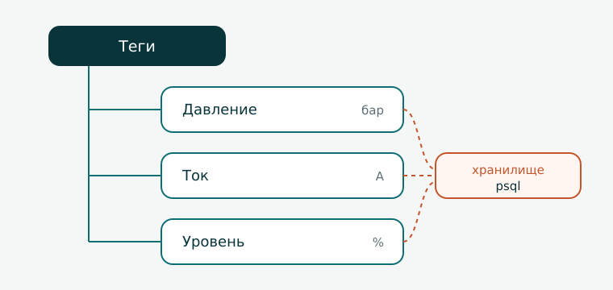
psql, созданном при установке.Нужны три тега:
| Имя | Единицы | Что это на станции |
|---|---|---|
| Давление | бар | Давление на напоре насоса |
| Ток | А | Ток двигателя |
| Уровень | % | Заполнение бака |
Тег «Давление»
В дереве нажмите кнопку «…» справа от корня «Теги». Откроется меню узла — выберите Новый тег.
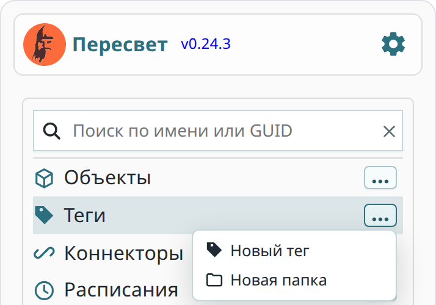
Тег создаётся сразу, с параметрами по умолчанию: имя совпадает с идентификатором (GUID), тип значений — «Вещественный». Справа открываются его свойства.
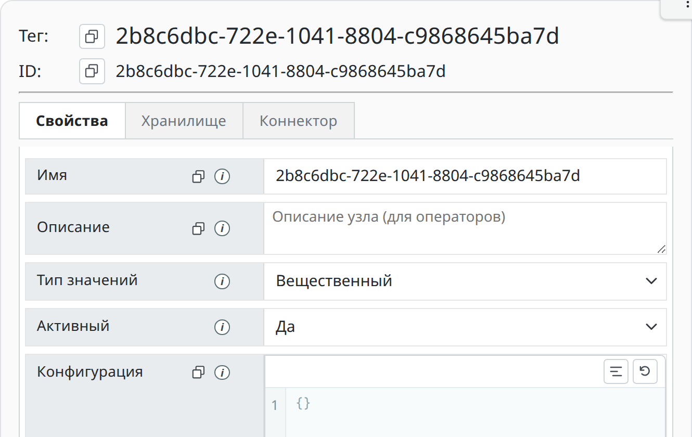
Замените имя на Давление, в поле «Единицы измерения» впишите бар. Тип значений оставьте «Вещественный». Нажмите кнопку-галочку под формой — это «Записать»: подсказка с названием появляется при наведении. Пока запись не сделана, имя в дереве не совпадает с тем, что видно в свойствах.
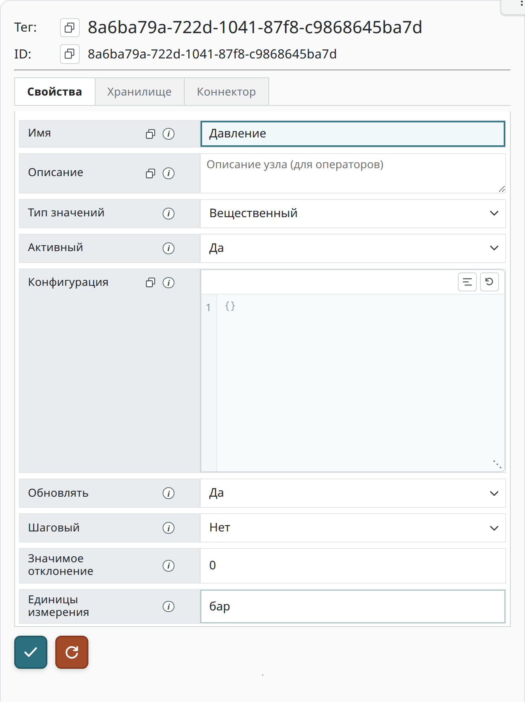
После записи в дереве появляется тег «Давление».
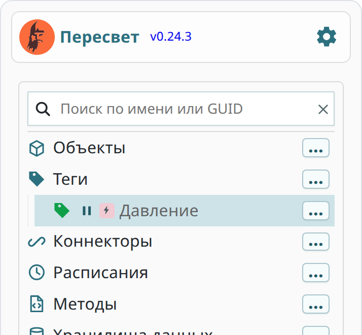
Привязка к хранилищу
Тег хранит значения в хранилище данных. Хранилище psql создано при установке, оно помечено как хранилище «по умолчанию». Откройте у тега «Давление» вкладку Хранилище.
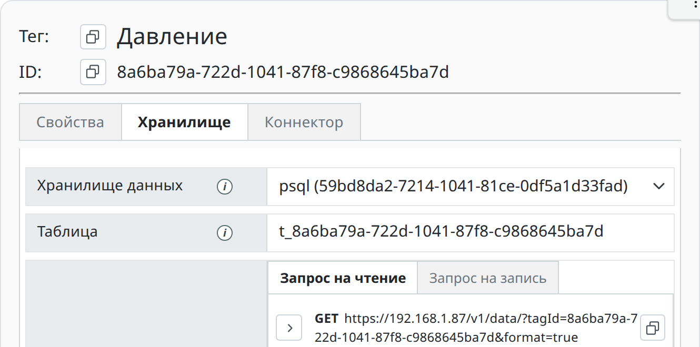
В поле «Хранилище данных» уже выбран psql, а в поле «Таблица» указана таблица, в которой будет лежать история тега. Привязывать тег вручную не пришлось: это сделала настройка Конфигуратора «Привязка тегов и тревог к хранилищу по умолчанию при создании». Она включена по умолчанию — окно настроек открывает шестерёнка рядом с надписью «Пересвет», см. урок 1.
Если настройка выключена
Чтобы увидеть разницу, выключим настройку. Нажмите шестерёнку, снимите флажок «Привязка тегов и тревог к хранилищу по умолчанию при создании» и закройте окно крестиком.
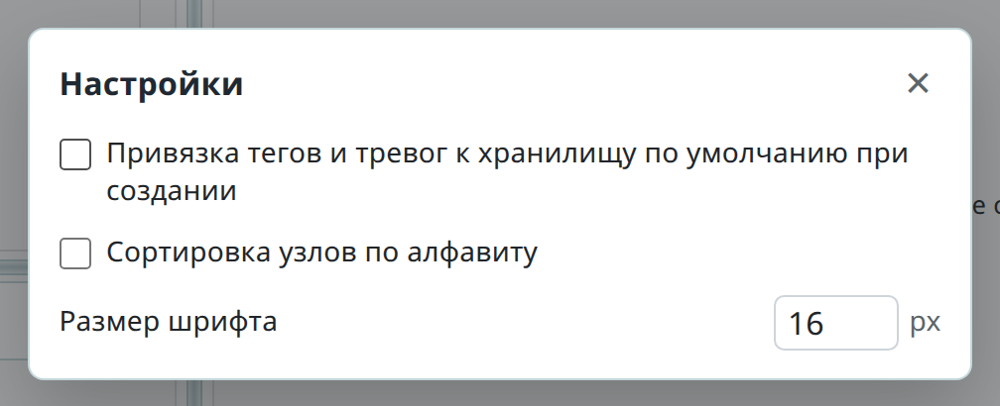
Создайте тег Ток с единицами А так же, как «Давление». Если форма нового тега открылась на вкладке «Хранилище», перейдите на вкладку «Свойства». Затем откройте вкладку Хранилище.
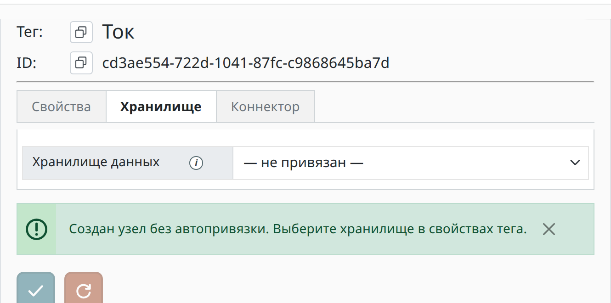
Тег есть, но писать его значения пока некуда: поля «Таблица» и блока «Данные тега» нет. Выберите в списке хранилище psql и нажмите «Записать».
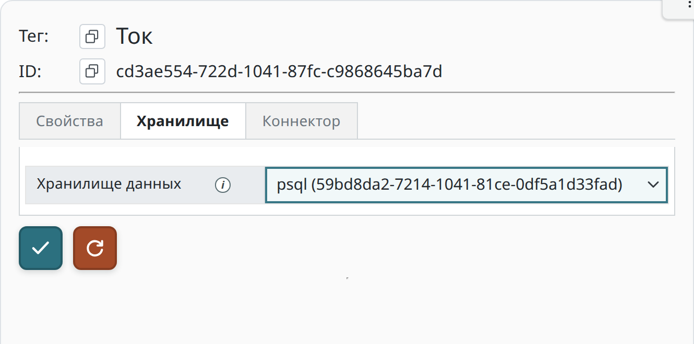
После записи появились таблица и блок «Данные тега» — теперь тег привязан так же, как «Давление».
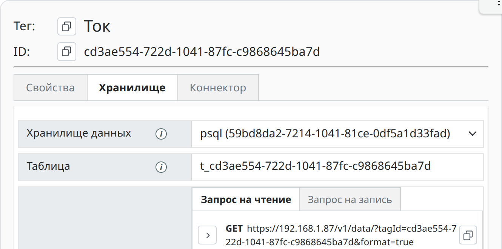
Верните настройку: снова откройте окно настроек и поставьте флажок. Дальше урок рассчитан на включённую настройку.
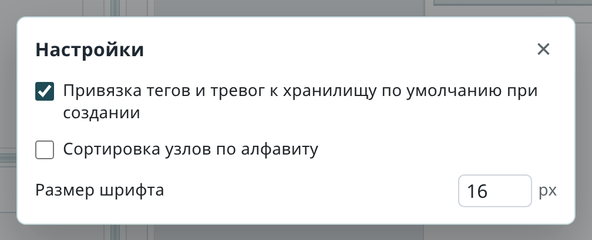
Тег «Уровень»
Создайте третий тег: имя Уровень, единицы %. Настройка включена, поэтому он, как и «Давление», сразу привязан к psql — вкладку «Хранилище» можно открыть и убедиться.
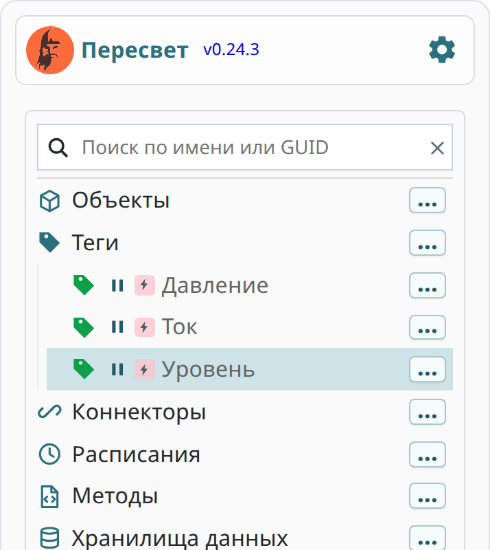
Значение тега
Тег хранит не одно «текущее число», а последовательность значений. Каждое значение состоит из трёх частей: метка времени, величина и код качества. Код 0 или пустое качество значит, что величине можно доверять.
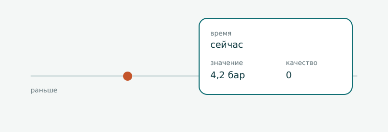
Запись значения
Выберите тег «Давление», откройте вкладку Хранилище и в блоке «Данные тега» — вкладку Запрос на запись. В поле «Значение» впишите 4.2. Нажмите Записать данные.
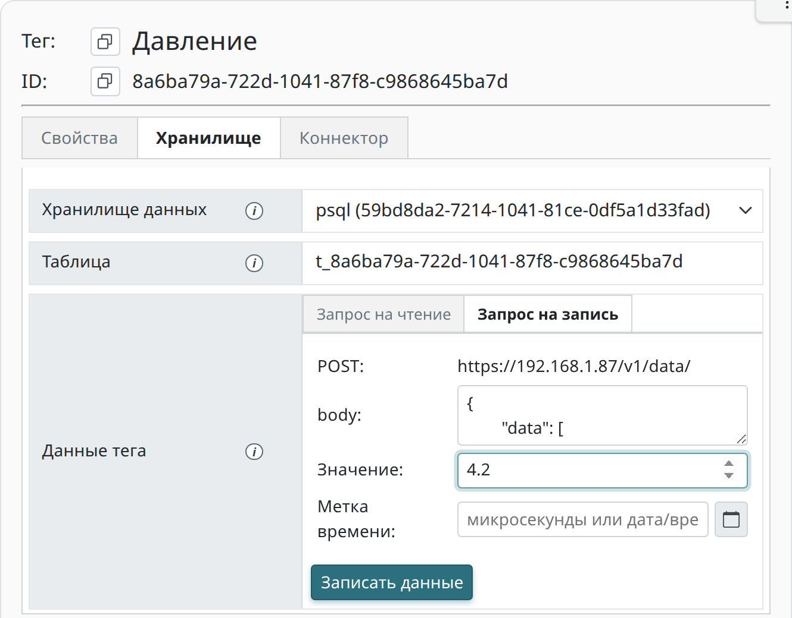
Поле «Метка времени» оставлено пустым. В этом случае платформа запишет значение в историю тега с текущей меткой времени — моментом, когда пришёл запрос.
Как платформа хранит метки времени
Во всех данных платформы метка времени — это целое число микросекунд, прошедших с 1 января 1970 года, в часовом поясе UTC. Например, число 1794411094833222 — это 15:31:34.833 UTC, то есть 18:31:34 по московскому времени. Так же устроена история любого тега, подробности — в разделе документации «Исторические данные».
Когда метку нужно ввести вручную, подойдёт и число микросекунд, и обычная дата со временем, например 2026-11-11 18:00:00+03:00. Если часовой пояс не указан, время считается UTC.
Подождите минуту и запишите в этот же тег второе значение — 4.6. Теперь в истории тега два значения. Затем запишите «Ток» (12.5) и «Уровень» (60). Теги независимы: запись давления не меняет уровень.
Чтение значений
Вернитесь к тегу «Давление» и откройте вкладку Запрос на чтение. Над кнопкой «Получить данные» раскройте параметры запроса — стрелка слева от строки GET. В строке GET всегда виден готовый адрес запроса: он меняется при каждом изменении параметров. Подробно параметры и особенности чтения описаны в разделе документации «Исторические данные».
Ниже один и тот же тег читается пятью способами. Метки времени в ваших ответах будут другими — смотрите на разницу между вариантами, а не на конкретные числа.
1. Параметры по умолчанию
Флажок format включён, actual выключен, границы start и finish не заданы. Нажмите «Получить данные».
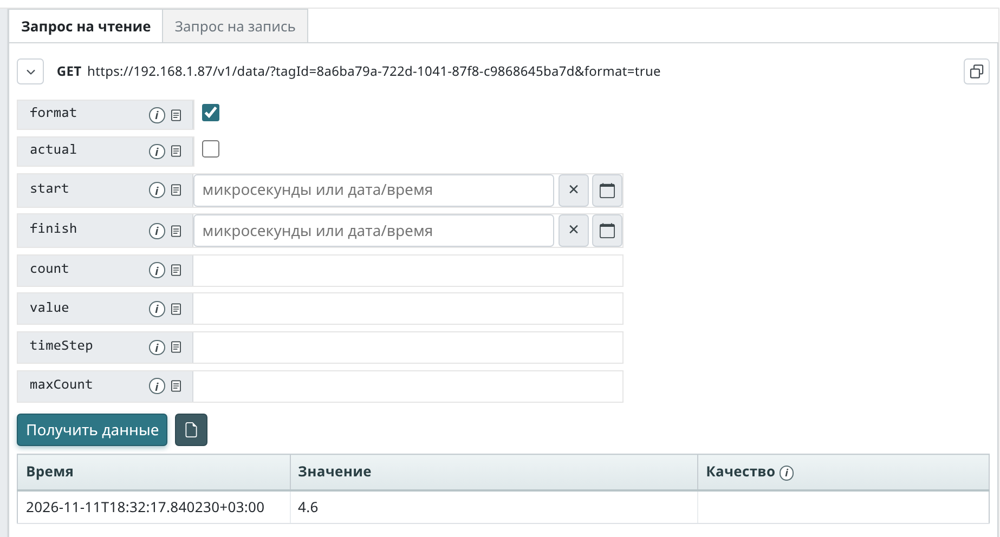
Вернулось последнее значение тега. Метка времени — строка с датой и временем в формате ISO 8601 и часовым поясом сервера. Обратите внимание: это не время записи значения, а момент самого запроса. Платформа отвечает на вопрос «каково значение тега сейчас», а последнее записанное значение действует, пока не записано новое.
2. Флажок format выключен
Снимите флажок format и снова нажмите «Получить данные». Из адреса пропал параметр format=true.
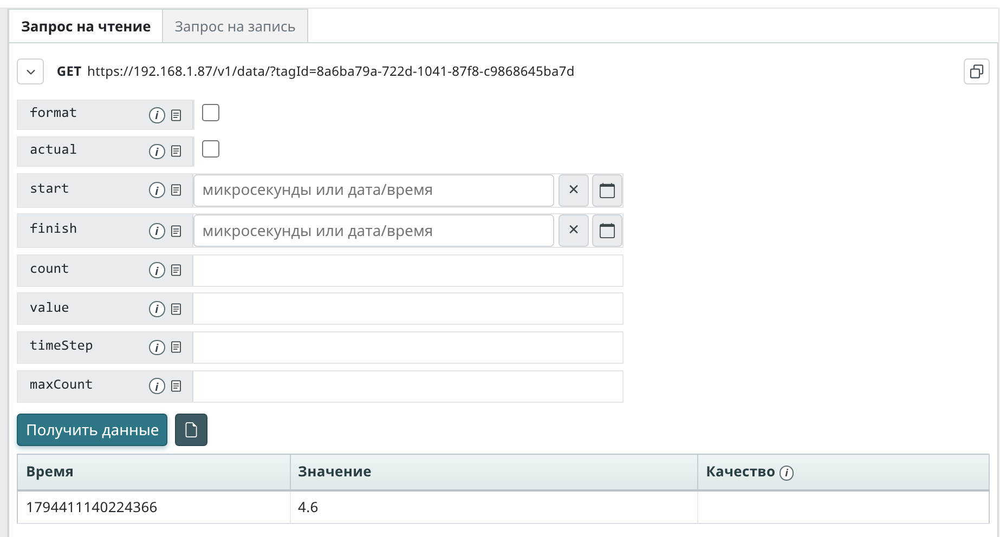
format метка времени — целое число микросекунд.Значение то же, а метка времени пришла в «родном» виде платформы — целым числом микросекунд с 1 января 1970 года, UTC (см. спойлер выше). Этот вид удобен программам: числа легко сравнивать и вычитать. Строка с датой удобнее человеку. Важно: в Конфигураторе флажок format по умолчанию включён, поэтому первое чтение вернуло строку; число вы получаете, если флажок снять (или не передавать параметр format в запросе из программы).
3. Флажок actual включён
Верните format и поставьте флажок actual.
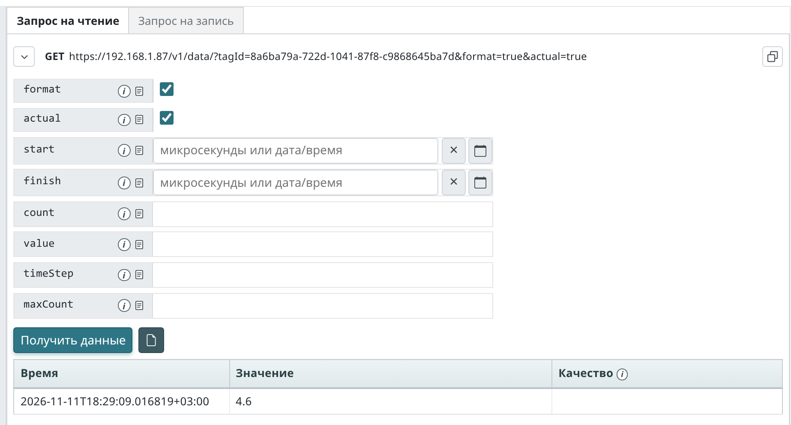
actual метка времени — момент записи значения.Значение прежнее, 4.6, а метка изменилась: теперь это время, когда значение было записано. Флажок actual говорит платформе возвращать только реально сохранённые точки — без добавления момента запроса. Сравните с вариантом 1: там время было «сейчас», здесь — время записи.
4. Задан start, actual выключен
Снимите actual и в поле start введите дату и время, более ранние, чем ваша первая запись, например 2026-11-11 18:00:00+03:00 (подставьте сегодняшнюю дату). Теперь читается не одно значение, а история от start до текущего момента.
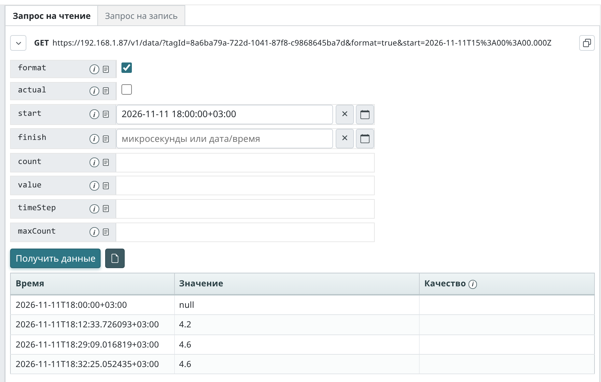
start без actual: границы интервала добавлены платформой.В ответе четыре строки:
- первая — начало интервала (
start). Значениеnull: к этому времени у тега ещё не было данных; - вторая и третья — реально записанные 4.2 и 4.6 со своими метками времени;
- последняя — конец интервала, момент запроса, со значением 4.6, которое действует до сих пор.
Платформа достраивает границы интервала, чтобы по ответу можно было, например, строить график от начала до конца запрошенного периода.
5. Задан start, actual включён
Оставьте start и снова поставьте флажок actual.
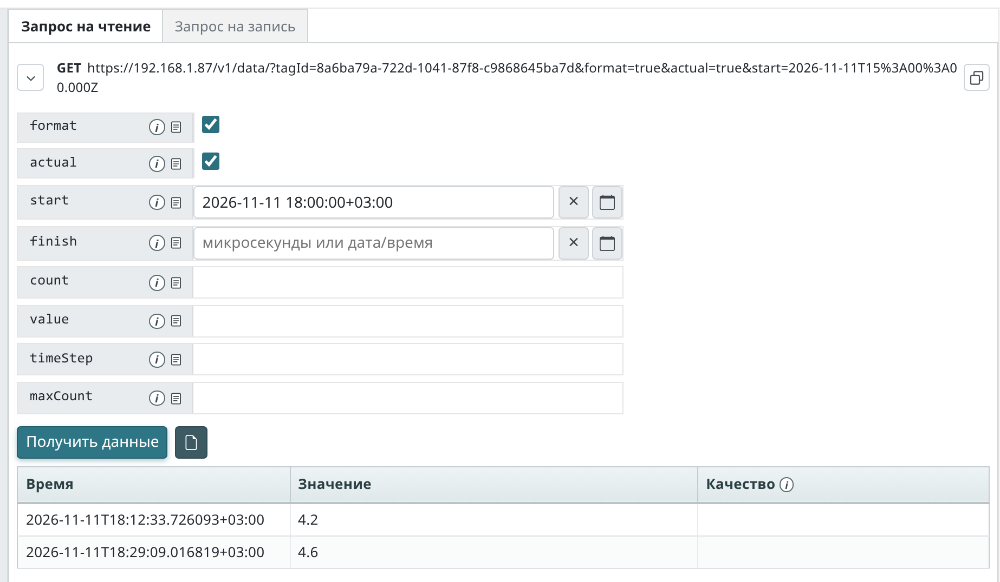
start и actual: только то, что записано.В ответе только две строки — реально записанные значения 4.2 и 4.6. Граничных строк нет. Так читают историю, когда нужны именно сохранённые точки, например для проверки, что запись дошла.
Коротко:
| Параметр | Включён | Выключен |
|---|---|---|
format | метка времени — строка с датой, ISO 8601 | метка времени — целое число микросекунд, UTC |
actual | только реально записанные точки, с временем записи | плюс граничные точки: начало интервала и момент запроса |
Привязки в хранилище
Привязка тега к хранилищу видна и с другой стороны. Раскройте в дереве «Хранилища данных» и нажмите на psql: под хранилищем появились три узла — «Давление», «Ток» и «Уровень». Это привязки: по одной на каждый тег, чьи значения лежат в этом хранилище.
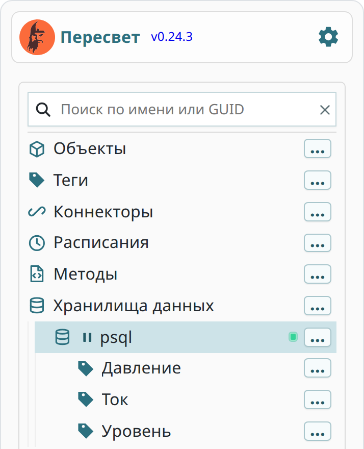
psql — привязки трёх тегов.Если нажать на привязку, справа откроются её параметры. Это не сам тег, а связь «тег — хранилище»: здесь видно, в какой таблице хранятся значения.
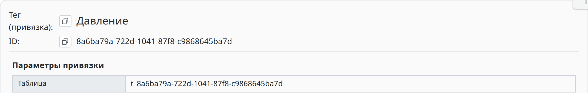
Чтобы перейти к самому тегу, нажмите «…» справа от привязки и выберите Перейти к тегу. Пункт «Удалить» в этом же меню удаляет привязку — тег останется, но писать его значения станет некуда.
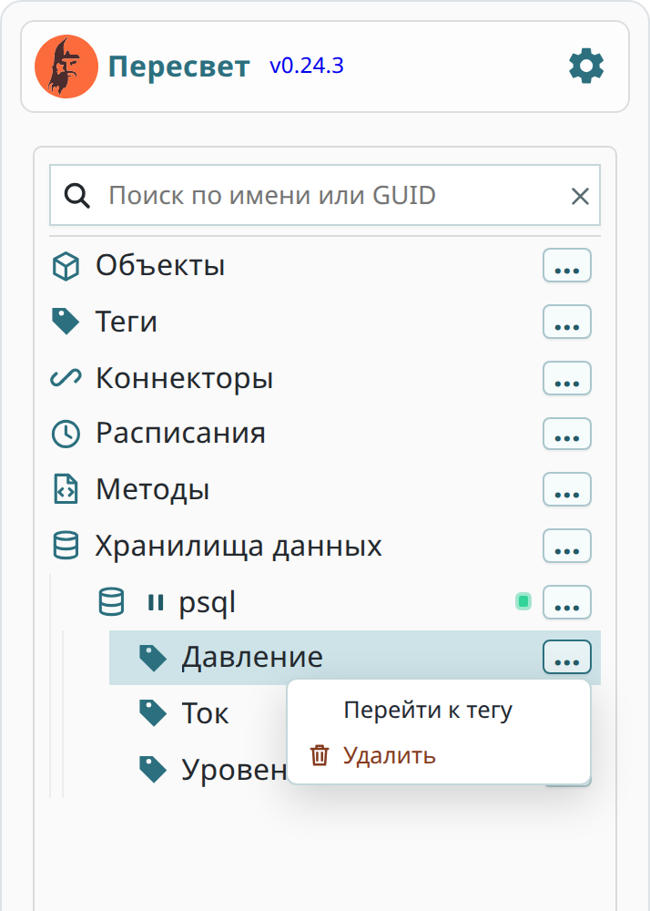
В дереве раскроется корень «Теги» и выделится тег «Давление».
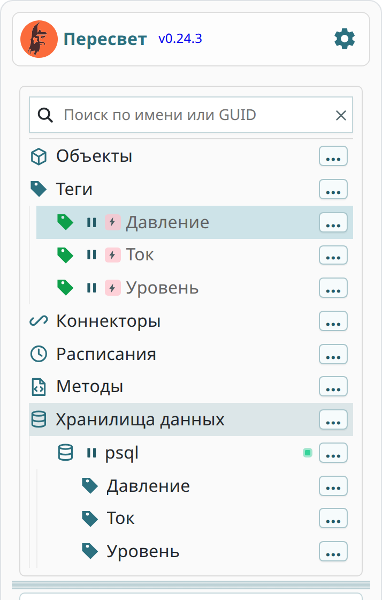
Справа открылись свойства тега.
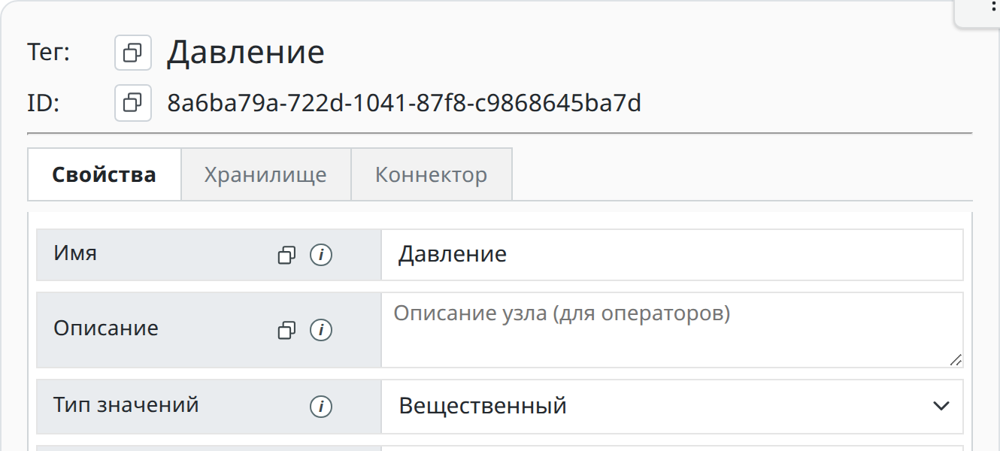
Так можно ходить в обе стороны: от тега на вкладке «Хранилище» — к хранилищу, от хранилища — по привязкам к тегам. Когда тегов сотни, по хранилищу удобно проверить, какие из них к нему привязаны.
Проверка
- В корне «Теги» три тега, у каждого тип «вещественный» и свои единицы.
- Все три тега привязаны к хранилищу
psql. - Чтение давления по умолчанию возвращает последнее записанное значение — 4,6.
- При включённом
actualи заданномstartв ответе ровно две строки — 4,2 и 4,6. - Настройка привязки к хранилищу по умолчанию снова включена.
- В «Хранилища данных → psql» три привязки, и пункт «Перейти к тегу» открывает нужный тег.